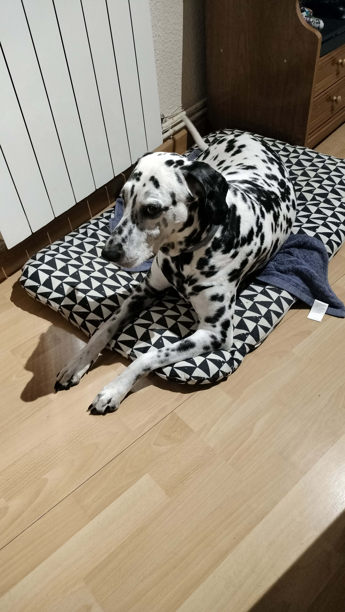

Bienvenido a Mundo Mascotas
Una página dedicada a mis perros y a la importancia de compartir la vida con mascotas.
Mis compañeros de vida
Comparto mi vida con dos compañeros muy especiales. El primero es Lío, un dálmata de 14 años, tranquilo, noble y amante de la calma y las siestas al sol. El otro es Reco, un American Staffordshire de 13 años, más hiperactivo y juguetón, siempre lleno de energía y entusiasmo. A pesar de sus personalidades tan diferentes, juntos forman el equilibrio perfecto y son una parte fundamental de mi vida.


Mascotas en casa
Tener una mascota significa compartir la vida con un compañero fiel que aporta amor, alegría y compañía. Las mascotas ayudan a reducir el estrés, mejoran nuestro estado de ánimo y fomentan la responsabilidad y la empatía. Más que animales, se convierten en parte de la familia y dejan una huella muy especial en nuestra vida.
Estadísticas de mascotas
| Ciudad | Mascotas registradas | Habitantes |
|---|---|---|
| Madrid | 280.000 | 3.200.000 |
| Barcelona | 180.000 | 1.600.000 |
| Valencia | 95.000 | 800.000 |
| Sevilla | 70.000 | 700.000 |